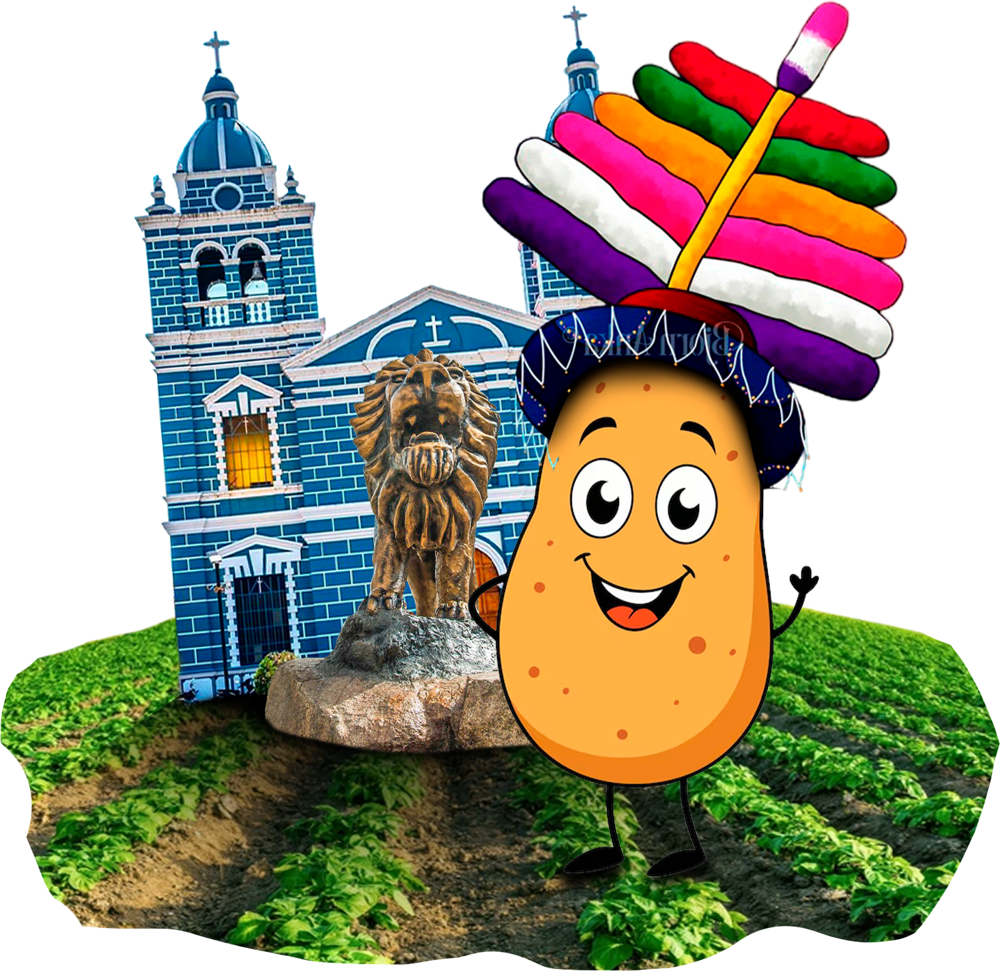
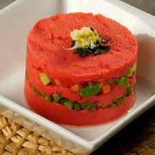
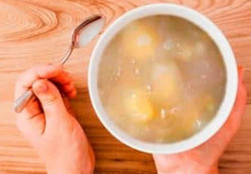

¡Lo huanuqueño primero!
En el marco del Día Mundial de la Papa, celebramos la riqueza de nuestras papas huanuqueñas, herencia viva de los Andes. Estas variedades nativas, llenas de sabor y tradición, serán las protagonistas en la preparación de exquisitos platos que resaltan nuestra identidad y cultura gastronómica.
30 de Mayo
Variedades Huanuqueñas Nativas

Importancia Cultural y Nutricional
-
Patrimonio cultural de Huánuco con más de 5000 años de historia
-
Rica fuente de carbohidratos complejos y vitamina C
-
Base de la economía local y sustento de miles de familias
Platos que preparamos a base de papas

Causa roja con atún
Delicioso plato frío de papa prensada rellena con atún, beterraga y verduras.

Keke de Papa
Innovador postre que combina la suavidad de la papa con el dulzor del bizcocho.

Tocosh
Ancestral preparación fermentada de papa con propiedades medicinales.